More Info On Sugarcane

Sugarcane Field.
Posted: April 25, 2014. | By: Admin - 3 Comments
SugarcaneSaccharum officinarum L. is a perennial grass. It belongs to bamboo family and it is indigenous to India. It is the main source of sugar, jaggery and khandsari. About two-thirds of the total sugarcane produced in India is consumed for making jaggery and khandsari and only one third of it goes to sugar factories. It also provides raw material for manufacturing alcohol. Brazil is largest producer of sugarcane followed by India, China, Thailand, Pakistan and Mexico. In India, Maharashtra is largest producer of sugar and it contributes about 34% of sugar in country followed by Uttar Pradesh.
Climate?
Temperature:20-30°C
Rainfall:75-150cm
Sowing Temperature:20-25°C
Harvesting Temperature:20-30°C
Soil?
Well drained, deep, loamy soil with ground water table below 1.5-2 m from the soil surface with adequate water holding capacity is ideal for sugarcane cultivation. It can tolerate considerable degree of acidity and alkalinity so it can be grown on soil, ranging from 5 to 8.5. If soil is low in pH (less than 5) add lime in soil and for high pH (more than 9.5) do gypsum application.
Land Preparation?
Give two ploughings to land. First ploughing should be given at depth of 20-25 cm. Crush clods with suitable implements or machine.
SOWING?
Seed Material?
METHOD OF SOWING?
For sowing use improved method of planting like deep furrow, trench method, paired row method or ring pit method.
Single budded set planting:
Select healthy setts for plantation. Make furrows at distance of 75-90 cm. Place single budded setts. If only small size setts from top portion of cane are selected then they are planted at distance of 6"-9". Place eye of sett on upward direction to ensure proper and quick germination. Cover setts with soil and apply light irrigation.
FERTILIZER?
WEED CONTROL?
In sugarcane due to weed infestation about 12 to 72% yield loss is observed depending upon severity. Initial 60-120 days are critical for weed management. Therefore weed management practices should be adopt within 3-4 months after planting. For control of weeds, chemical is not only solution. Adopting mechanical as well as cultural practices gives effective solution.
IRRIGATION?
The number of irrigations required will depending upon soil type, water availability etc. The hot weather associated with dry winds and drought increases the water requirement of the crop. Apply first irrigation when 20-25% crops have germinated. In monsoon, apply irrigation depending upon rainfall intensity and frequency. In case of scanty rainfall apply irrigation with 10days interval. Afterwards increase irrigation intervals, i.e apply water with 20-25days interval. To conserved moisture in soil do mulching in between cane rows. Avoid water stress from April to June. Water stress during these days will reduce yield. Avoid water logging in standing field. Tillering stage and elongation or grand growth phase are critical for irrigation.
PESTS AND CONTROL???
Early shoot borer

Attacked in germination stage upto internodes formations. Larva make holes in shoot below the ground level and then enter into it thus causes dead heart. It give offensive smell. It is mostly observed in light soil and in dry weather. Pest is active from March - June.
White Grub

hese feed on root system and thus damage to crop. Entire drying up of stalks and easily dislodging of cane are main symptoms for white grub infestation. In initial stage infestation observed in patches and afterwards it spread on entire field. The adult beetles emerge from the soil during June-July with the first showers of rain. They congregate on the nearby trees and feed on their leaves during night.
Termites

Before sowing do cane treatment. Dip setts in imidacloprid solution@4ml/10Ltr for 2min or at time planting spray Chlorpyriphos@2litre/acre on setts. If infestation occur in standing crop, drench with Imidacloprid@60ml/150litre of water or Chlorpyriphos@1ltr/200Ltr of water.
Pyrilla

Severe pest of North India. Adult suck leaf sap under the surface of leaves. It results in yellowing white spot and withering. They secretes honey like substance and attract sooty mould fungi, due to this leaves become blackish.
Root borer

Borer enter into root zone of shoot below ground. Infestation is high from July onward. Due to infestation yellowing of leaves from leaf apex to downwards along the margin is seen.
Stalk Borer

It is active from July onwards with onset of monsoon. Larvae feeds on inner surface of leaf sheath, mid rib and stalk. It can attack any region of stalk. Infestation continues from cane formation to harvest.
Top Borer

It attacks crops from tillering to maturity phase. Larvae makes tunnels into midribs causes white streak which later turns brown. If infestation occurs during tillering phase, the attacked shoots dies resulting in dead heart formation. If it attacks on grown up canes, apical growth is arrested resulting in bunchy top symptoms.
DISEASE AND CONTROL???
Red Rot

From top, third and fourth leaves show yellowing and drying. At later stage show discoloured lesion on rind. If split the diseased stalk show reddening of internal tissue. A sour and alcoholic smell emanates from the infected cane.
Wilt

Root borer, nematodes, termite, drought and water logging condition cause plant to wilt infection. Crown leaves turn yellow and loose turgor and withers. Boat shape cavities appears in pith region and crop get shrink. It reduces germination and reduces yield.
Pokkah Boeng

It is air borne disease. Symptoms are observed in monsoon. Disease plant bear distorted and wrinkled leaves. Leaves show reddish patches at base of leaf blade. Newly formed leaves become shortened and sword like.
Harvest?

Harvesting of cane at right time is necessary for good yield and for high sugar recovery. Harvesting at over aged or under aged cane leads to loss in cane yield. Depending upon withering of leaves and cane juice, harvesting time can be decided. To know the right harvesting time some farmer used hand sugar refractometer is used. Sickles are used for harvesting. Stalks are cut at ground level so that the bottom sugar rich internodes are harvested which add to yield and sugar. De-topping at appropriate height. After harvesting quick disposal of the harvested cane to factory is necessary.
Post Harvest Method????
provides a juice, which is used for making white sugar, and jaggery (gur) and many by products like bagasse and molasses.
Categories
Weed Removal 11
Breeding 5
Fencing 7
Ranching 12
Popular Tags
Fertilizers
Crop Rotation
Weed Removal
Breeding
Floriculture
Landscape horticulture
Olericulture
ideas
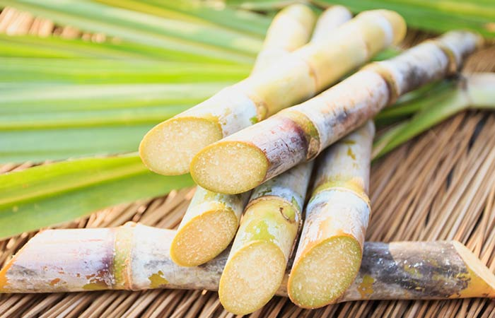
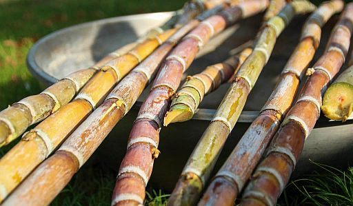
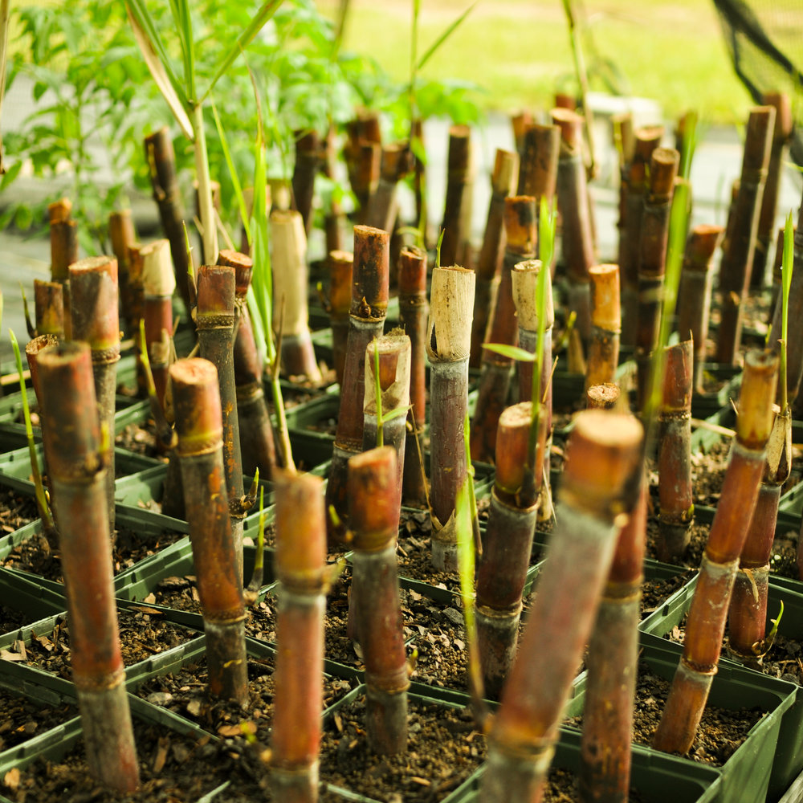
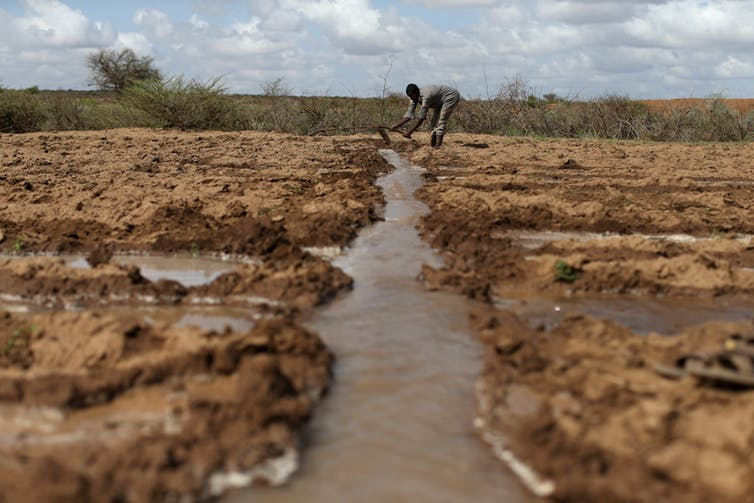

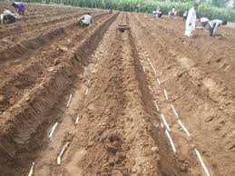
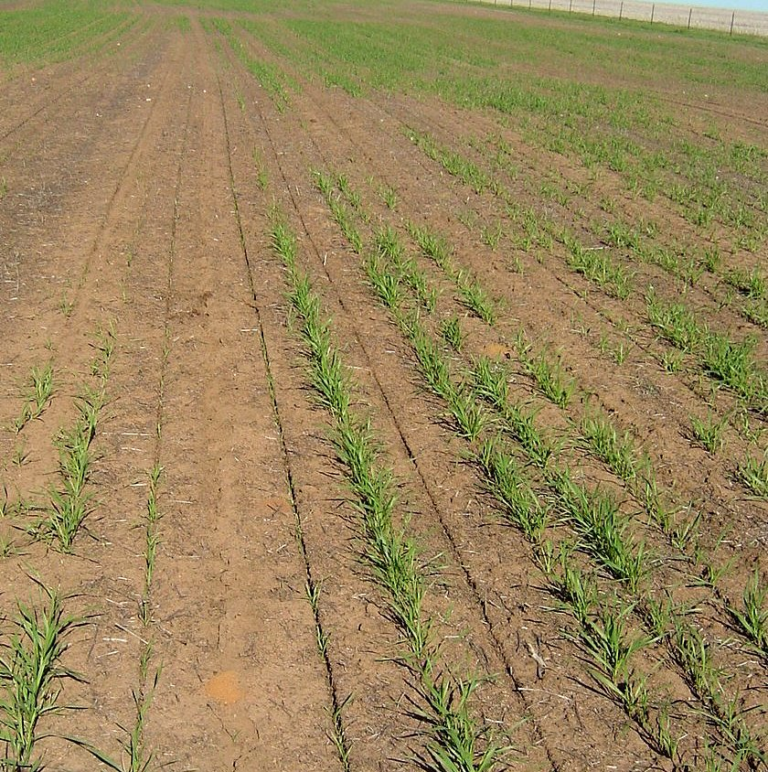
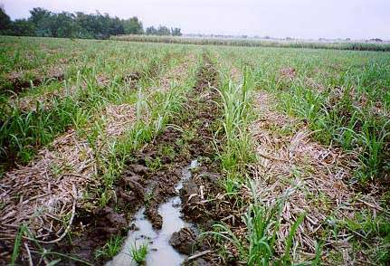

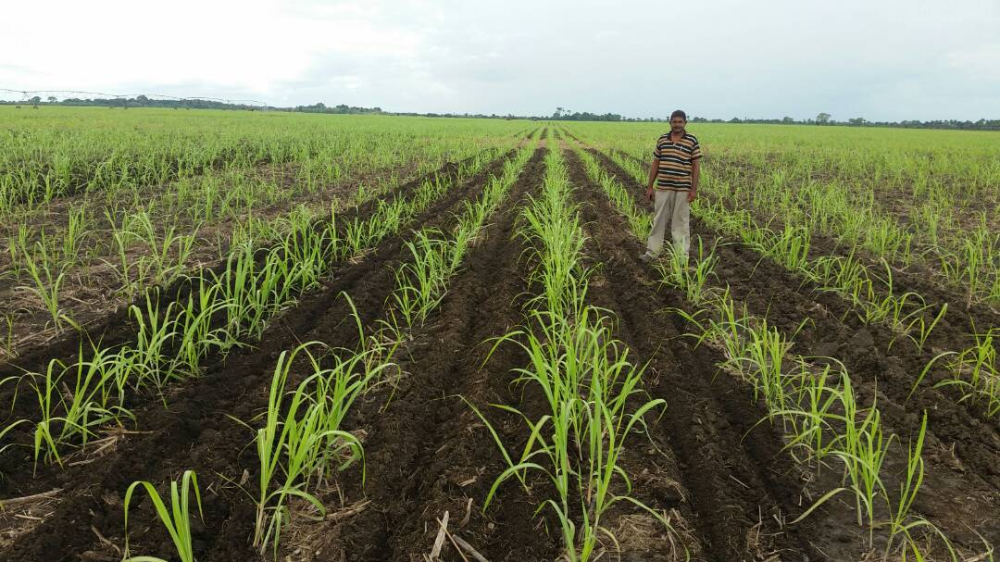
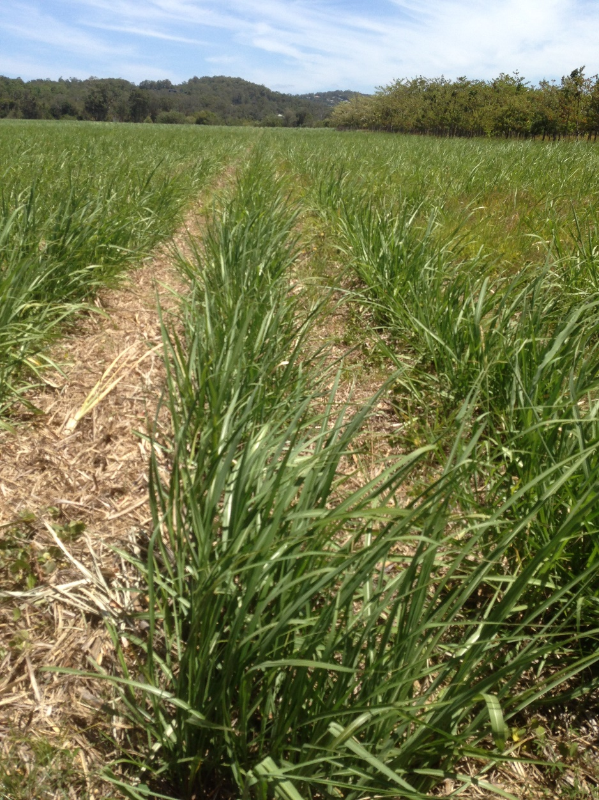
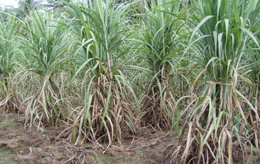
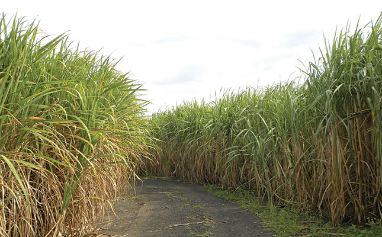


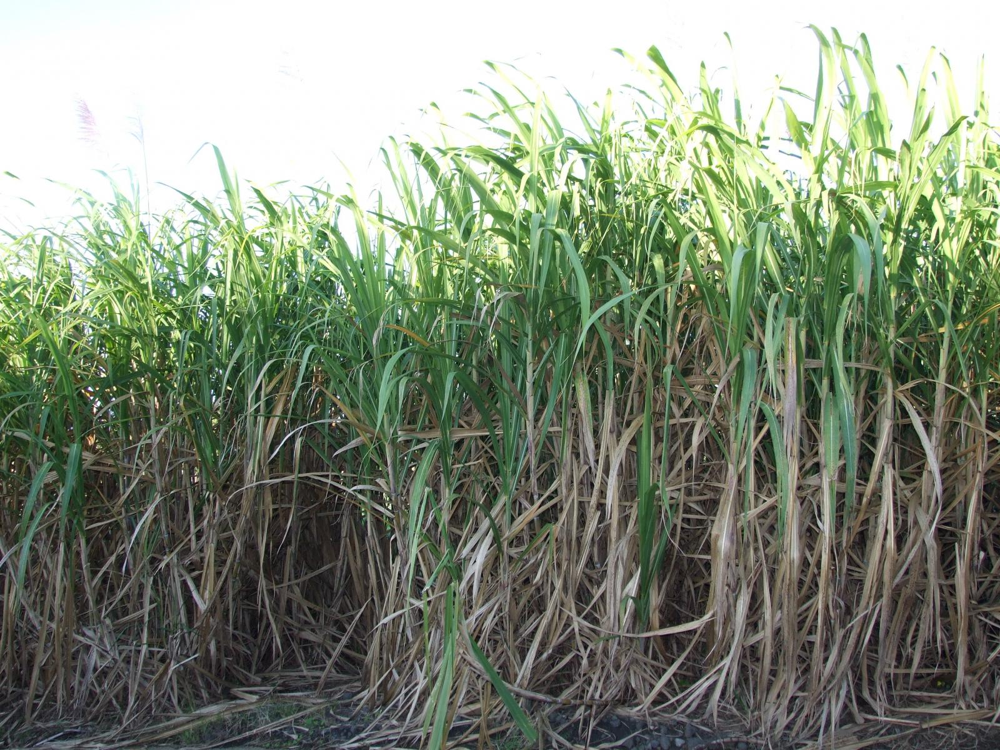
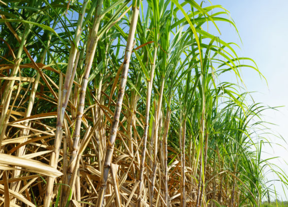
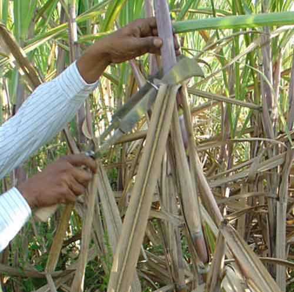

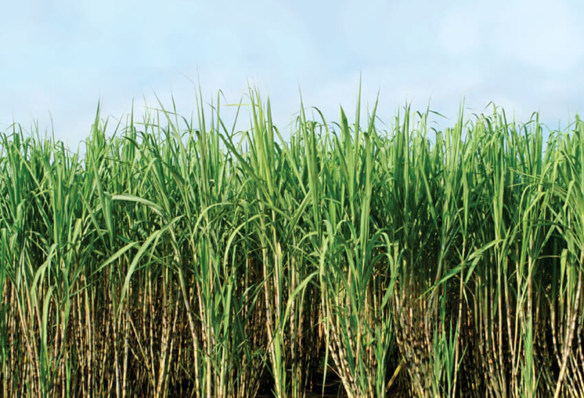
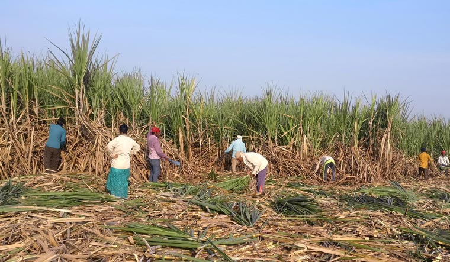
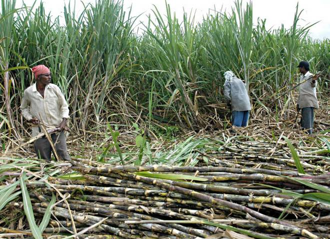
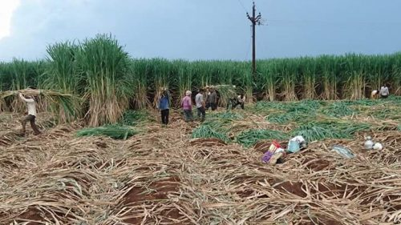
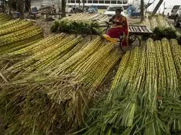

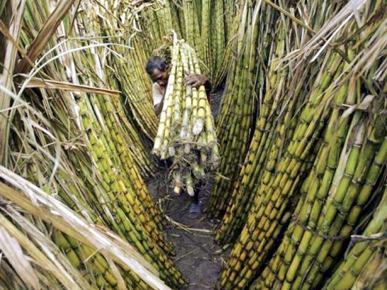
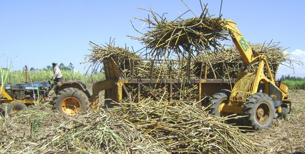
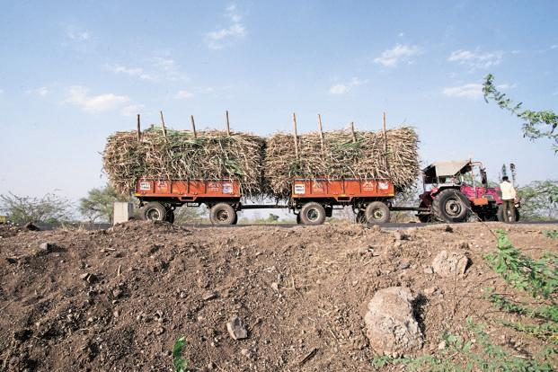
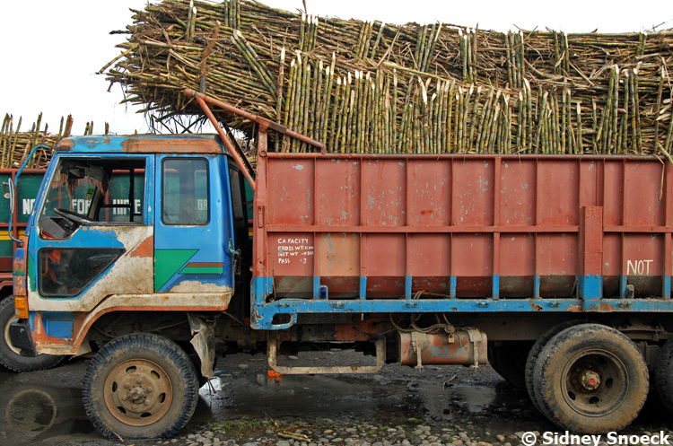
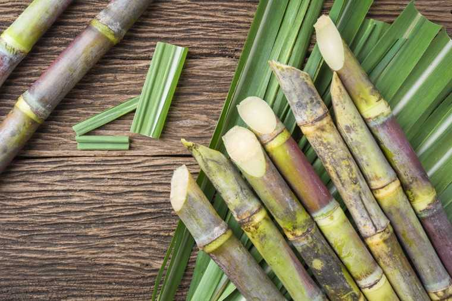
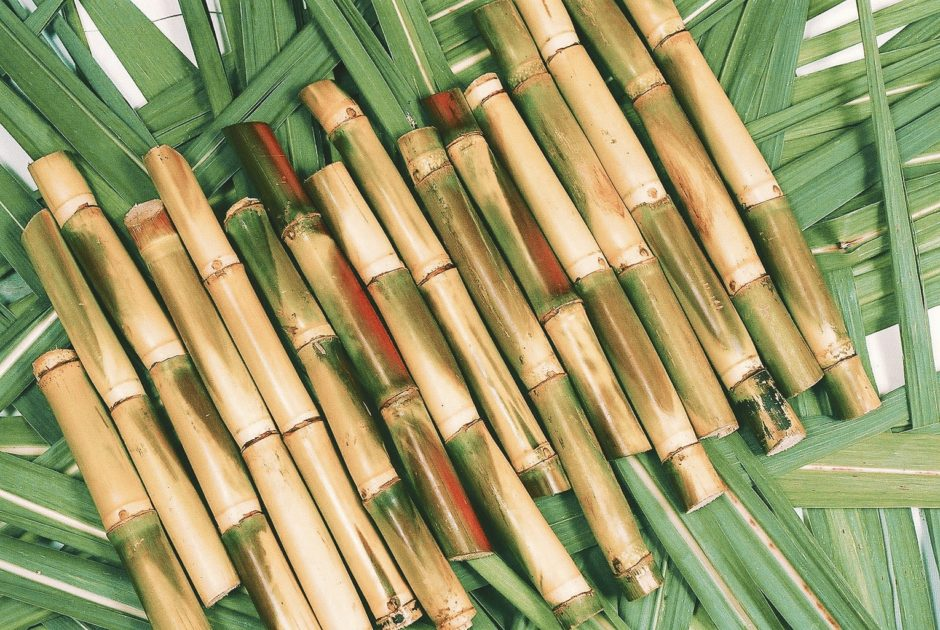